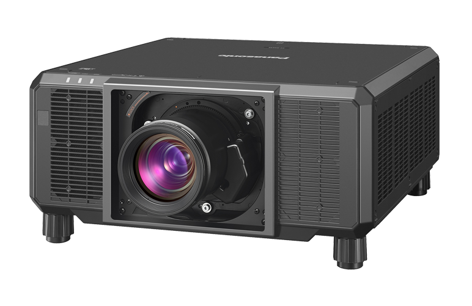

大きさと距離は？
画面の幅・高さと本体を置ける距離からレンズを選ぶ。
プロジェクター ↗EQUIPMENT / 12
大型プロジェクター
大きなスクリーンに、細かな映像を届ける。
KEY SPECIFICATIONS

画像を大きく見る ＋01 / ROLE & FLOW
実際の配線・端子構成は案件に合わせて決めます。
02 / BEFORE YOUR BRIEF
画面の幅・高さと本体を置ける距離からレンズを選ぶ。
会場の電源条件を共有し、必要な明るさとの適合を整理。
客席・通路・搬入経路と、投写を遮るものがないかを合わせる。
03 / CHOOSING THE RIGHT TOOL
大型イベントや映像展示で、大きな投写面と細かな映像表現を検討するときに。
100～120V使用時の明るさは最大15,000 lm以下です。4K表示はクワッドピクセルドライブを使う方式で、PT-RZ24KJとは表示仕様が異なります。
レンズとファンクションボードは別売です。投写比・スクリーン寸法・周囲の明るさを組み合わせて構成を選びます。画像はシリーズ共通の外観例で、装着レンズ込みの料金や付属品を表すものではありません。
参考資料：メーカー公式仕様 ↗（2026年11月2日照合）
スクリーン寸法、投写距離、設置電源、会場図面、素材解像度、レンズと設営の範囲をお聞かせください。本体・周辺機材・搬入出・設営・本番操作・撤去を分けて、必要な範囲を整理します。セットの付属品や人員が自動で含まれる表示ではありません。
04 / RELATED EQUIPMENT